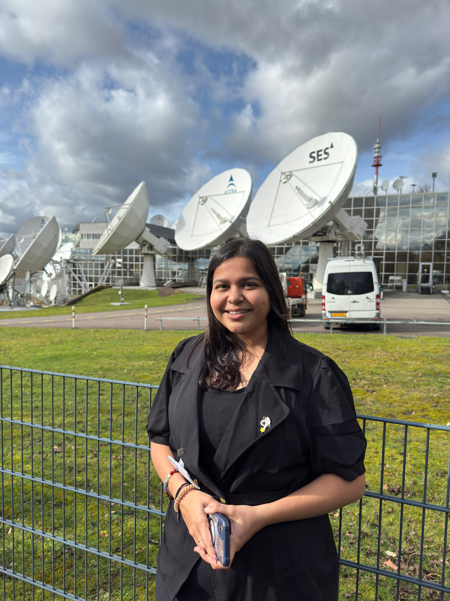

INITIATE DESCENT
ONLINE // IN ORBIT
Aastha Bhatt
Space Systems & Electronics Engineer
Designing mission-critical hardware, optical communication architectures, and end-to-end ground station systems for deep space exploration.

02. FLIGHT_LOG
Project Trainee · Atmospheric Science
Jan 2024 - Apr 2024Physical Research Laboratory (PRL), India
- Synthesized multi-source atmospheric datasets (ECMWF, MOSDAC) via MATLAB.
- Automated data pipelines for high-volume satellite telemetry.
Research Trainee · Quantum Comms
Aug 2023 - Nov 2023Space Applications Centre, ISRO, India
- Architected Pointing, Acquisition, and Tracking (PAT) electronics using STM32.
- Developed real-time control firmware stabilizing QKD payload feedback loops.
Intern · Power Electronics
Feb 2023 - May 2023Aartronix Innovations Pvt. Ltd, India
- Simulated power factor correction (PFC) topologies in MATLAB/Simulink.
03. PAYLOADS
Designed compact satellite architecture for autonomous environmental monitoring and data processing in orbit using AI.
AISystem Architecture
PAT System for Quantum Links
Designed electronics driver for satellite-based quantum communication, integrating precision converters.
STM32DAC/ADC
Martian Rover Concept
3D mapping of Martian lava tubes using rover-drone system with seismic sensing and spectroscopy.
3D MappingSpectroscopy
04. SUBSYSTEMS_SKILLS
C/C++
Python
MATLAB
STM32/Arduino
Altium/KiCAD
RF Engineering
Link Budgeting
MBSE (Cameo)
STK
Fusion 360 (CAD)